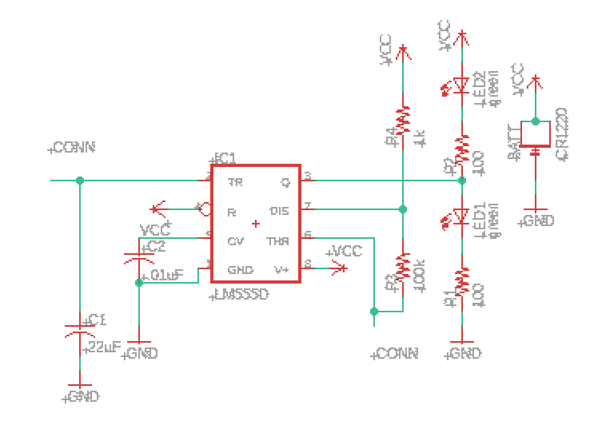

For my ECE Discovery Studio course, I embarked on an Individual Discovery Projects to explore the field of ECE. Since I had more experience with software and programming in the past, I wanted to try something new, so I decided to pick up skills in PCB design and fabrication.
During my first semester at Georgia Tech, I attended workshops at The Hive, an ECE makerspace at Georgia Tech, to learn how to fabricate PCBs. I learned how to use about the entire fabrication process, from plotting to electroplating, with the following equipment: LPKF ProtoMat S103 (“PCB plotter”), LPKF ProtoLaser U4 (“PCB laser”), and PKF Contac S4 (“PCB electroplater”).
I also followed tutorials to learn how to use EAGLE to design PCBs. The first PCB I learned to design was a 2-layer "blinky board" PCB, with two LEDs that blink back and forth using a 555 timer. With the help of Jeremy Blum's YouTube tutorials, I first made a schematic of the circuit, then designed the board layout.
|  |
I had no experience with designing PCBs before, so I was able to gain a lot of knowledge from the tutorials. I started with learning the basic structure/material composition of a PCB and how it works. I learned about the materials within PCBs, the different layers of PCBs, and how vias allow for connections between layers. Then, I learned how to use software to draw a schematic. This includes loading a library of footprints into EAGLE, choosing the right footprints, adding names and values to the parts, and naming unconnected wires to connect them. For the PCB layout, I learned about the different layers of the PCB, creating ground and power buses, adding vias, ratsnest and auto-routing functions in EAGLE, and manual routing. I also learned how to run EAGLE’s Design Rule Check to ensure that a PCB is ready for manufacturing. Finally, I learned how to generate a bill of materials for the PCB components, as well as gerber files for fabrication.
To practice using EAGLE, I converted a breadboard circuit of a 4-state finite state machine (FSM) that I made for one of my classes into a PCB design.
The two images below show the original FSM diagram, FSM state table, and breadboard circuit I made for one of my Digital System Design labs. The FSM is implemented in the circuit using a D-type flip flop IC, a 3-by-8 decoder IC, and a NAND gate IC. Digital I/O reading and writing is controlled by an external data acquisition device.
Below is the circuit implemented as an EAGLE schematic and PCB design. A battery is used to provide power/signal. A sliding switch is used to control the input for the FSM, LEDs are used to indicate the current state ID, and a button switch is used to simulate each clock cycle.
Next semester, I plan to design my own PCB project and fabricate my own PCB at The Hive.
I built a waterproofed temperature sensor using a TMP36 thermistor and Arduino Nano. I soldered the thermistor onto wires and covered the thermistor and its connecting wires with conformal coating to waterproof the sensor so that it could be tested in water. Then, I calibrated the sensor by recording its readings in water with varying temperatures to obtain data points that allowed me to find a least-squares equation relating voltage and temperature. I also added LEDs to indicate different temperature ranges. This was my first time using Arduino and a breadboard, and I really enjoyed the project.